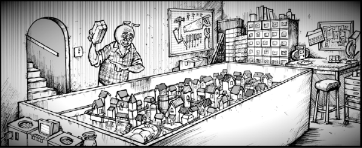

Spinning off from an initial Small Press offering, these disturbing tales almost exclusively eschew language for purely visual storytelling (although it can sometimes be difficult to figure out what's happening).
Art by Bob Byrne
| Story Title | Parts | Pages | w indicates a wraparound coverCovers | Year(s) | Issues | Writer | Artist | Colourist | Letterer |
|---|---|---|---|---|---|---|---|---|---|
From Small PressMr. Amperduke | 1 | 6 | 0 | 2006 | M247 | Bob Byrne | Bob Byrne | [greyscale] | Bob Byrne |
| Tale #1 [Lure] | 1 | 6 | 0 | 2007 | Reprints: M422 (supplement)1536 | Bob Byrne | Bob Byrne | [greyscale] | n/a |
| Tale #2 [Failure] | 1 | 6 | 0 | 2007 | Reprints: M422 (supplement)1537 | Bob Byrne | Bob Byrne | [greyscale] | n/a |
| Tale #3 [Apple] | 1 | 6 | 0 | 2007 | Reprints: M422 (supplement)1538 | Bob Byrne | Bob Byrne | <-- | n/a |
| Tale #4 [Escape] | 1 | 6 | 0 | 2007 | Reprints: M422 (supplement)1565 | Bob Byrne | Bob Byrne | [greyscale] | n/a |
| Tale #5 [Snares] | 1 | 6 | 0 | 2007 | Reprints: M422 (supplement)1566 | Bob Byrne | Bob Byrne | [greyscale] | n/a |
| Tale #6 [Insects] | 1 | 6 | 0 | 2008 | Reprints: M422 (supplement)1599 | Bob Byrne | Bob Byrne | [greyscale] | n/a |
| Tale #7 [In the Walls] | 1 | 6 | 0 | 2008 | Reprints: M425 (supplement)1615 | Bob Byrne | Bob Byrne | [b&w] | n/a |
| Tale #8 [Trolls] | 1 | 6 | 0 | 2009 | Reprints: M425 (supplement)1639 | Bob Byrne | Bob Byrne | [b&w] | n/a |
| Tale #9 [Mothers] | 1 | 6 | 0 | 2009 | Reprints: M425 (supplement)1643 | Bob Byrne | Bob Byrne | [greyscale] | n/a |
| Tale #10 [Brittle] | 1 | 6 | 0 | 2009 | Reprints: M425 (supplement)1647 | Bob Byrne | Bob Byrne | <-- | n/a |
No supertitle.Mister Amperduke: [Growth] | 1 | 6 | 0 | 2009 | M291 | Bob Byrne | Bob Byrne | [greyscale] | n/a |
| Tale #11 | 1 | 6 | 0 | 2010 | Reprints: M425 (supplement)M294 | Bob Byrne | Bob Byrne | [greyscale] | n/a |
| Tale #12 [Engagement] | 1 | 6 | 0 | 2011 | Reprints: M425 (supplement)1729 | Bob Byrne | Bob Byrne | [b&w] | n/a |
| Tale #13 ['Bots] | 1 | 6 | 0 | 2011 | Reprints: M425 (supplement)1730 | Bob Byrne | Bob Byrne | [b&w] | n/a |
| Tale #14 [Identity] | 1 | 6 | 0 | 2011 | Reprints: M425 (supplement)1755 | Bob Byrne | Bob Byrne | <-- | n/a |
| Tale #15 [Reckless] | 1 | 6 | 0 | 2012 | Reprints: M425 (supplement)1802 | Bob Byrne | Bob Byrne | [b&w] | n/a |
| Tale #16 | 1 | 6 | 0 | 2012 | 1803 | Bob Byrne | Bob Byrne | [b&w] | n/a |
| The Teddy | 1 | 6 | 0 | 2013 | M335 | Bob Byrne | Bob Byrne | <-- | n/a |
| Tale #18 | 1 | 6 | 0 | 2013 | M338 | Bob Byrne | Bob Byrne | <-- | n/a |
| The Plumber | 1 | 6 | 0 | 2014 | 1910 | Bob Byrne | Bob Byrne | <-- | n/a |
| The Scamp vs the Pigs | 1 | 6 | 0 | 2015 | 1923 | Bob Byrne | Bob Byrne | <-- | n/a |
| year | episodes | pages |
| 2000 | 0 | 0 |
| 2001 | 0 | 0 |
| 2002 | 0 | 0 |
| 2003 | 0 | 0 |
| 2004 | 0 | 0 |
| 2005 | 0 | 0 |
| 2006 | 1 | 6 |
| 2007 | 5 | 30 |
| 2008 | 2 | 12 |
| 2009 | 4 | 24 |
| 2010 | 1 | 6 |
| 2011 | 3 | 18 |
| 2012 | 2 | 12 |
| 2013 | 2 | 12 |
| 2014 | 1 | 6 |
| 2015 | 1 | 6 |
| 2016 | 0 | 0 |
| 2017 | 0 | 0 |
| 2018 | 0 | 0 |
| 2019 | 0 | 0 |
| 2020 | 0 | 0 |
| 2021 | 0 | 0 |